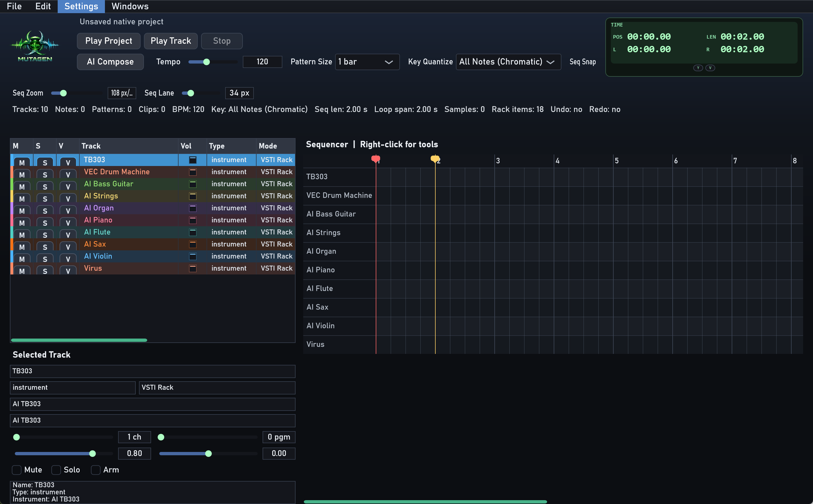
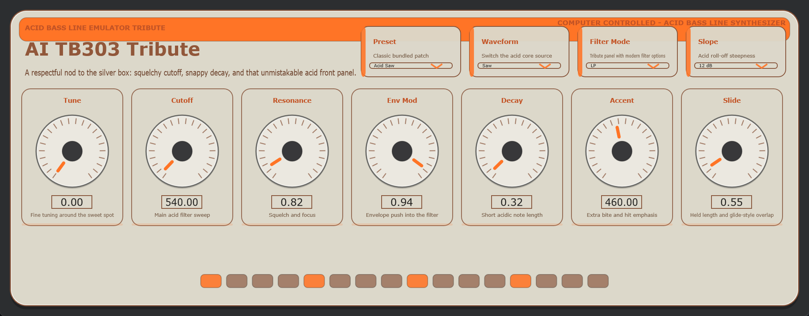
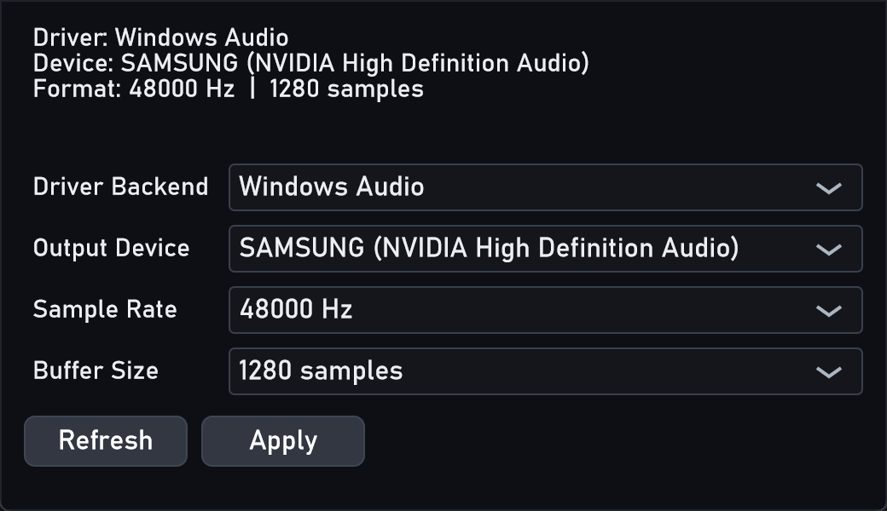

1. Add or select a track
Create an instrument or sample track, then assign a bundled or third-party VST3 when needed.
Native JUCE workstation
A native C++ desktop music workstation with a pattern sequencer, dedicated piano roll, shared live VST3 playback and editor instances, bundled instruments, samples, automation, AI composition, and release-ready Windows packaging.
mainv* tag/docsScreenshots




Guide
Create an instrument or sample track, then assign a bundled or third-party VST3 when needed.
Use the sequencer to draw pattern blocks at the current pattern size. Double-click a block to edit it in the piano roll.
Use the piano roll for notes, and the always-visible lower pane for velocity, MIDI CC, or automation-style controller drawing.
Use Edit VST or the track V toggle to open the live editor. Parameter moves apply straight to the running engine.
Use the mixer, locator handles, pattern tools, and floating windows to build the arrangement and balance the session.
Export stems or track renders, and use the activity log plus AI HTTP debug log when diagnosing model responses.
Flagship Instrument

Virus Synth is the most detailed bundled instrument in the rack. It includes shared oscillator controls, modulation and matrix pages, dual filters, FX pages, a shift layer, and preset browsing through the LCD/OSD workflow.
Release
powershell -ExecutionPolicy Bypass -File .\scripts\build_windows_release.ps1 -ReleaseVersion v0.1.0The packaging script builds the native app, copies the bundled VST3 instruments, and creates a portable ZIP containing Mutagen.exe.
git tag v0.1.0
git push origin main --tagsPushing a v* tag triggers the native Windows release workflow and publishes the ZIP, installer, and SHA256 checksums to GitHub Releases.
Notes
Mutagen targets VST3 plugin hosting for the current native workflow.
The automated release pipeline currently ships the native Windows build and installer.
The portable package includes the bundled VST3 instrument set from the plugins/AdvancedVSTi submodule.